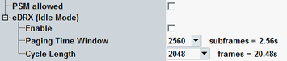

This section describes the following "Connection" settings.

Specifies whether a UE request for power-saving mode (PSM) is accepted or rejected. See also 3GPP TS 24.301, section 5.3.11 "Power saving mode".
If you enable the checkbox, a PSM request is answered with timer T3324, see "T3324".
Remote command:This node configures extended discontinuous reception (eDRX). eDRX has been specified for power saving.
eDRX introduces discontinuous reception for the idle mode. The UE is informed about the eDRX cycle length and the paging time window size. Each eDRX cycle includes one paging time window during which the UE monitors the NPDCCH for paging messages. The remaining time of the cycle, the UE does not monitor the NPDCCH.
Enables or disables eDRX.
Remote command:Duration of one paging time window in idle mode, in subframes.
Remote command:Duration of one extended DRX cycle in idle mode, in radio frames.
Remote command: